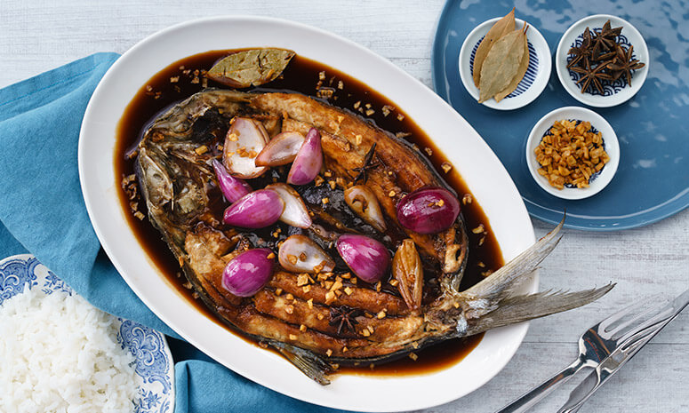

Bangus Asado Recipe

All you need is 15 minutes to make simple bangus sauce-sarap!
Preparation Time: 10 mins.
Cooking Time: 12 mins.
Total Time: 22 mins.
Ingredients
- 150 g DEL MONTE Original Style Tomato Sauce (200g)
- 5 Tbsp soy sauce
- 1/2 cup onion, red, quartered
- 1 cup water
- 1 pc bay leaf/laurel leaf
- 1/4 cup sugar, brown
- 2 pcs star anise
- 1/4 cup oil
- 2 Tbsp garlic, minced
- 500 g bangus, daing cut, butterflied
Instructions
- Mix all ingredients for the sauce then simmer for 3 minutes.
- In a pan, sauté garlic in oil until golden brown. Drain and set aside.
- Put back the garlic oil in the pan and pan-fry the bangus.
- To serve, pour sauce over the cooked bangus then top with garlic chips.